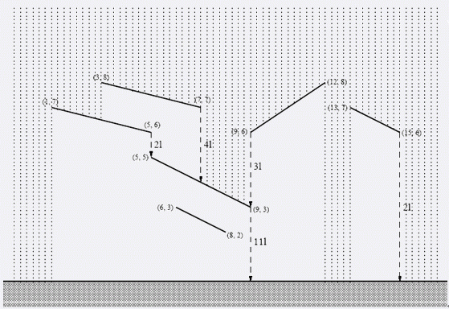

BZPRO
#1451. November Rain
内存限制：64 MiB
时间限制：1 Sec
提交
提交记录
讨论
题目描述
某个房子的屋顶如下图所示…。  在单位时间单位长度降雨量为1单位的时候，每条“屋顶”，都有一个单位时间落下的水量（就是单位时间从屋顶较低的那一侧落下去的水量），现在希望对于每个屋顶，算出它的落水量。
输入格式
第一行一个数N（1<=N<=20000），表示屋顶的个数。 接来下N行，每行4个整数，X0,Y0,X1,Y1,描述一个屋顶（坐标范围[-1000000,1000000]，保证屋顶一定是斜的，屋顶不会有任何公共点）。
输出格式
一共N行，每行一个数，表示第I个屋顶的落水量。
样例
样例输入
6
13 7 15 6
3 8 7 7
1 7 5 6
5 5 9 3
6 3 8 2
9 6 12 8
样例输出
2
4
2
11
0
3
数据范围与提示